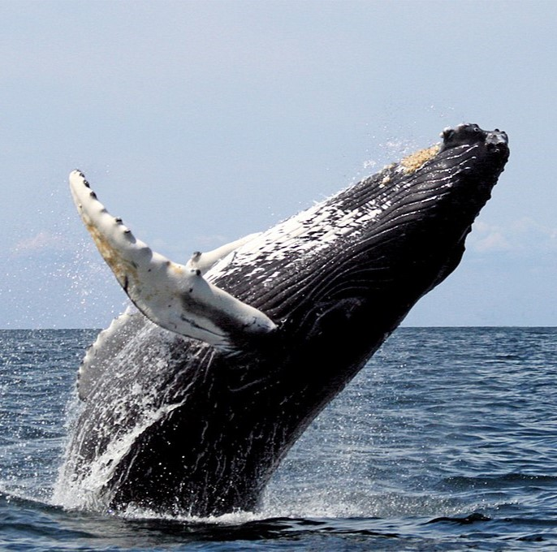

Les baleines à bosse subissent l'appauvrissement de leurs habitats,
notamment les récifs coralliens et les zones de nourrissage. La destruction
de ces environnements essentiels affecte leur reproduction et leur survie.
Il est principalement causé par
la pollution, le réchauffement des océans et la surpêche, qui détruisent les
écosystèmes sous-marins. La perte de récifs coralliens, de prairies marines
et de mangroves prive de nombreuses espèces de leur abri et de leur source
de nourriture. Ce déclin des habitats marins a des conséquences graves,
menaçant la biodiversité marine et les communautés humaines qui dépendent
des ressources océaniques.